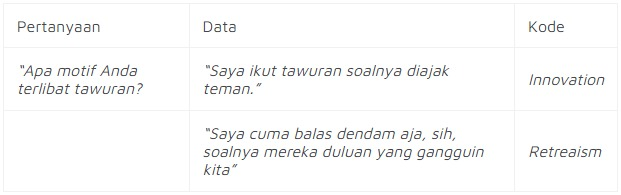

Kategorisasi Data
Tahapan pertama yang harus kamu lakukan ketika menggunakan teknik pengolahan data kualitatif adalah memilah data-data tersebut. Cara memilahnya adalah dengan mengkategorisasi data-data tersebut.
Contohnya, nih, kamu sudah menyalin hasil wawancara kamu dalam bentuk verbatim. Nah, hal selanjutnya yang harus kamu lakukan adalah mengambil poin-poin penting dari verbatim tersebut. Poin-poin ini harus sesuai dengan topik atau
teori yang digunakan dalam penelitian kamu.
Biar lebih paham, kita coba pakai contoh. Misalnya, kamu melakukan penelitian untuk mencari tahu penyebab siswa SMA terlibat tawuran. Dari hasil wawancara, kamu menemukan poin-poin ini:
- “Saya ikut tawuran soalnya diajak teman.”
- “Saya cuma balas dendam aja, sih, soalnya mereka duluan yang gangguin kita”
Data-data ini bisa kamu kasih kode sesuai teori penyebab penyimpangan, yaitu innovation dan retreatism. Berikut contohnya.

Jadi, kamu cukup menandai poin-poin hasil wawancara yang relevan dengan penelitian kamu. Jika tidak relevan, kamu bisa mengabaikannya.
Penyajian Data
Nah, setelah data-data itu kamu kumpulkan sesuai kodenya, tahap selanjutnya adalah melakukan penyajian data.
Bagaimana caranya? Kamu bisa menyajikan data-data tersebut dalam bentuk narasi sesuai dengan topik dan teori yang kamu gunakan. Tentu saja, data-data ini harus kamu interpretasikan terlebih dahulu agar lebih mudah dipahami.
Contohnya:
“Berdasarkan wawancara dengan narasumber, didapatkan bahwa (interpretasi data yang didapatkan).”
“Teori (teori yang digunakan) menyatakan bahwa (penjelasan teori yang digunakan). Dalam hal ini, (fenomena penelitian) dapat dijelaskan dengan teori tersebut.”
“Sesuai dengan (teori yang digunakan), fenomena (fenomena penelitian) terjadi akibat (kaitkan dengan teori). Hal ini sesuai dengan (interpretasi temuan data yang mendukung).”